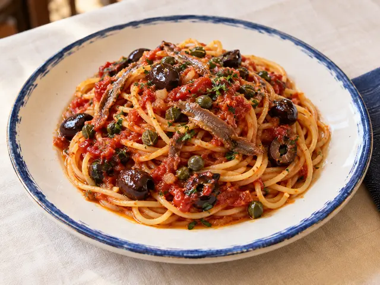
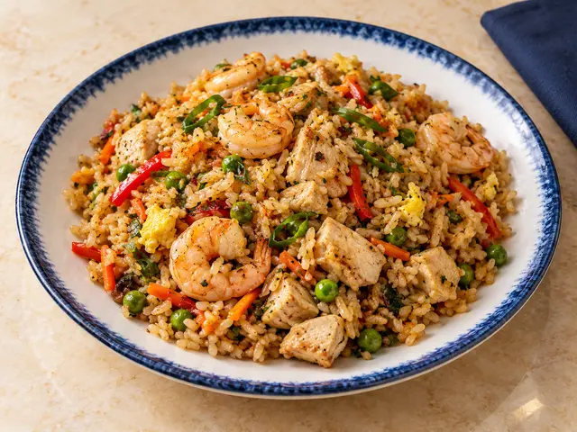
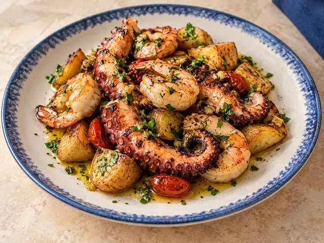
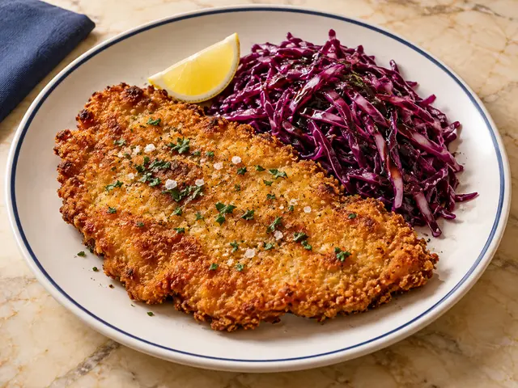

Spaghetti alla puttanesca

(1, 4)
Valido solo per pranzo
Controcorrente · Cucina italiana e di mare

(1, 4)

(1)

(2, 6)

(1, 3, 4)

(2, 14)

Con un tocco di panna, patate e prezzemolo
(7)

(1, 3)

(4)
Prenotazioni entro le 12 · Attendere la conferma del Ristorante per considerare valido l’ordine · Acqua, caffè e coperto inclusi · Fino a esaurimento